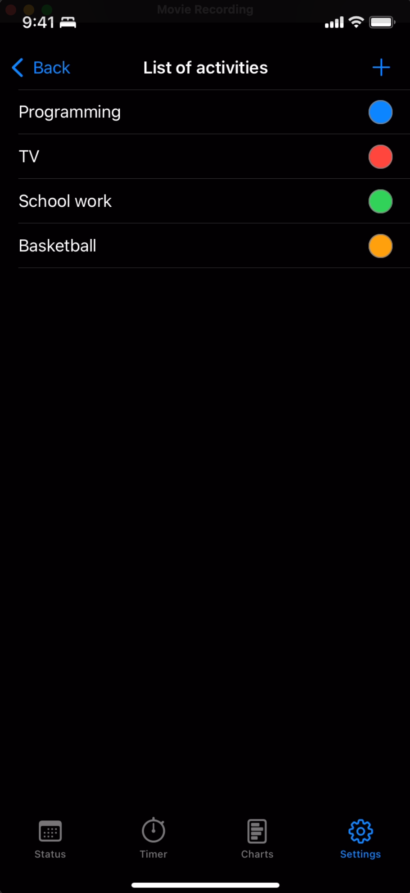
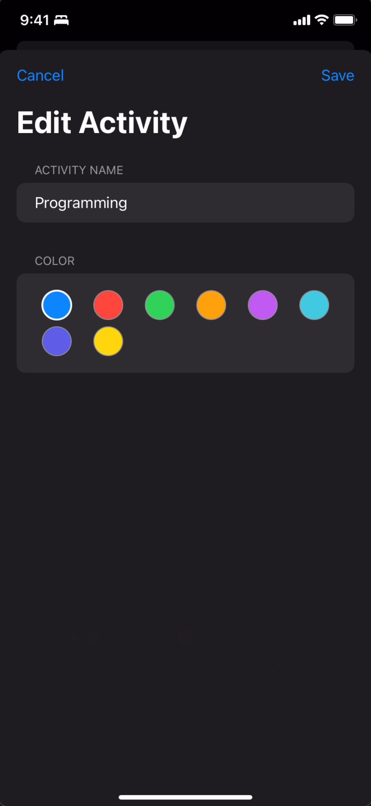
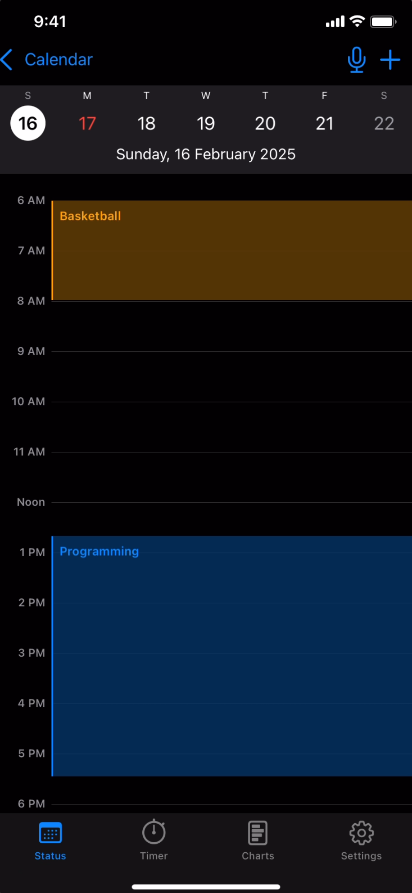
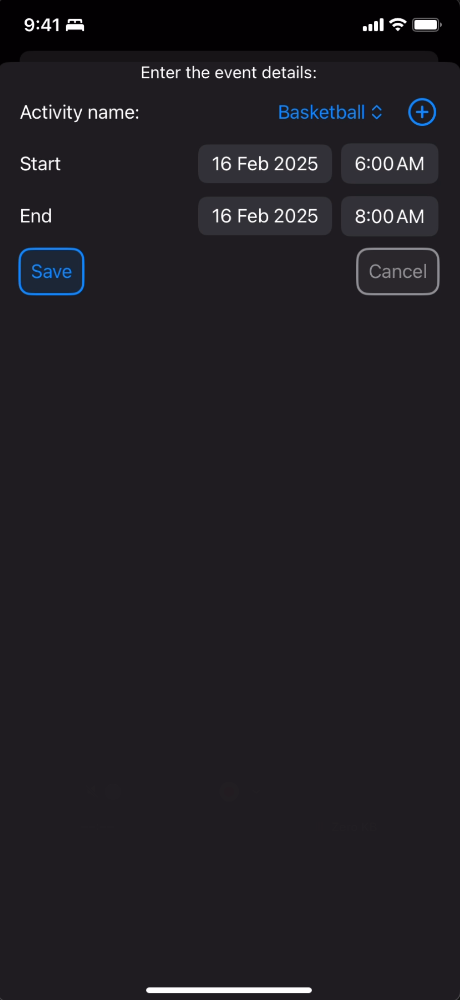

Activity Tracking
Activity tracking allows users to log and categorize their activities, including work tasks, study sessions, exercise routines, leisure activities, and more. This helps users understand how they spend their time and improve their productivity.
Activities and Events
Activities are actions a user can do, like tennis, basketball, or SAT preparation. When a user performs an activity for a time duration, it is called an event in Prodler.
How to Add an Activity
There are several ways to add an activity in Prodler:
- Tap the Mic icon in the Status tab and say "Add activity ____", for example, "Add activity basketball".
- Go to the Settings tab -> List of activities -> + button on the top right to add an activity and select its color code.
- Use the circled plus button near the top-right when adding an event if the desired activity is not yet present.


How to Add an Event
There are several ways to add an event in Prodler:
From the Status Tab
- Long-press on a time-slot. Select the activity and the time duration, then save.
- Tap the + button at the top-right of the screen. Select the activity and the time duration, then save.
- Click on the Mic icon and talk to Prodler, for example, by saying "Basketball from 6 am to 8 am today". Click on Save after making edits if required.


The Status tab provides various ways to add events. Use the long-press, + button, or Mic icon to add events as described above.
From the Timers Tab
- Tap the play button next to a known activity to start recording time. When you complete the activity, tap the red rectangle button to stop and record the time.